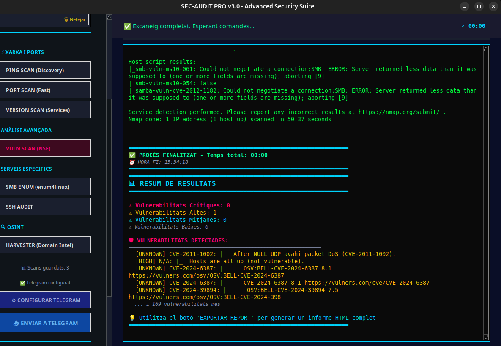

Documentació: Escaneig de Vulnerabilitats (Nmap NSE)
Aquesta documentació descriu la integració de l'escaneig de vulnerabilitats utilitzant els scripts NSE (Nmap Scripting Engine) a l'aplicació SEC-AUDIT PRO. Aquesta funcionalitat permet detectar vulnerabilitats conegudes en els serveis exposats del sistema objectiu.
Captures de Pantalla

1. Funció de Neteja: prettify_vuln
Per millorar la llegibilitat de la sortida de l'escaneig de vulnerabilitats, s'ha creat la funció prettify_vuln que processa i formata els resultats.
def prettify_vuln(raw: str) -> str:
"""Neteja bàsica per a l'escaneig de vulns"""
lines = raw.splitlines()
out_lines = []
for raw_line in lines:
line = strip_ansi(raw_line).rstrip()
# Destaquem línies clau manualment si cal, però el parser GUI ho farà millor
if "|_ssl-ccs-injection: VULNERABLE" in line:
out_lines.append(f"TAG_FAIL::{line}")
else:
out_lines.append(line)
return "\n".join(out_lines)
Característiques:
* Neteja ANSI: Elimina els codis de color de la sortida bruta.
* Detecció de Vulnerabilitats: Identifica línies que contenen la paraula clau "VULNERABLE" i les marca amb el tag TAG_FAIL:: per destacar-les visualment a la interfície.
* Format Net: Retorna un text net i estructurat per a la visualització.
2. Parser de Dades: ScanDataParser.parse_vulnerabilities
Aquesta funció extreu informació estructurada de la sortida de l'escaneig de vulnerabilitats.
@staticmethod
def parse_vulnerabilities(raw_output: str) -> dict:
"""Extreu vulnerabilitats d'un scan"""
data = {
'vulnerabilities': [],
'critical_count': 0,
'high_count': 0,
'medium_count': 0,
'low_count': 0
}
lines = raw_output.splitlines()
current_vuln = None
for line in lines:
# Detectar CVEs
cve_match = re.search(r'(CVE-\d{4}-\d+)', line)
if cve_match:
cve_id = cve_match.group(1)
# Intentar detectar severitat
severity = 'UNKNOWN'
if 'CRITICAL' in line.upper():
severity = 'CRITICAL'
data['critical_count'] += 1
elif 'HIGH' in line.upper():
severity = 'HIGH'
data['high_count'] += 1
elif 'MEDIUM' in line.upper():
severity = 'MEDIUM'
data['medium_count'] += 1
elif 'LOW' in line.upper():
severity = 'LOW'
data['low_count'] += 1
data['vulnerabilities'].append({
'cve': cve_id,
'severity': severity,
'description': line.strip()
})
# Detectar VULNERABLE
elif 'VULNERABLE' in line.upper():
# Extraure nom de la vulnerabilitat
vuln_name = line.split('VULNERABLE')[0].strip()
if vuln_name:
data['vulnerabilities'].append({
'cve': 'N/A',
'severity': 'HIGH',
'description': line.strip()
})
data['high_count'] += 1
return data
Funcionalitat: * Detecció de CVEs: Utilitza expressions regulars per identificar identificadors CVE (Common Vulnerabilities and Exposures). * Classificació per Severitat: Analitza el text per determinar la severitat (CRITICAL, HIGH, MEDIUM, LOW). * Comptadors: Manté un recompte de vulnerabilitats per cada nivell de severitat. * Detecció Genèrica: Identifica línies amb la paraula "VULNERABLE" encara que no tinguin un CVE associat.
Estructura de Retorn:
{
'vulnerabilities': [
{
'cve': 'CVE-2021-12345',
'severity': 'HIGH',
'description': 'Descripció completa de la vulnerabilitat'
},
...
],
'critical_count': 2,
'high_count': 5,
'medium_count': 3,
'low_count': 1
}
3. Lògica d'Escaneig: vuln_scan
Aquesta és la funció principal que executa l'escaneig de vulnerabilitats.
def vuln_scan(target, stop_event=None):
if stop_event:
# --script vuln: Executa scripts de detecció de vulnerabilitats
# -sV: Necessari per saber la versió del servei
cmd = ["nmap", target, "-sV", "--script", "vuln"]
stdout, stderr, rc = run_stoppable_command(cmd, stop_event)
# Si triga molt i l'usuari cancel·la
if rc == -1: return "Escaneig de vulnerabilitats aturat."
return prettify_vuln(stdout + "\n" + stderr)
else: return "Error intern"
Paràmetres de Nmap:
* -sV: Detecció de versions dels serveis. És essencial perquè els scripts de vulnerabilitats necessiten conèixer les versions per identificar si són vulnerables.
* --script vuln: Executa tots els scripts NSE de la categoria "vuln" (vulnerabilitats). Aquests scripts comproven vulnerabilitats conegudes com:
- SSL/TLS vulnerabilities (Heartbleed, POODLE, etc.)
- SMB vulnerabilities (EternalBlue, MS17-010)
- HTTP vulnerabilities (Shellshock, SQL injection)
- FTP, SSH, i altres vulnerabilitats de protocols
Gestió d'Aturada:
* L'escaneig pot ser aturat per l'usuari mitjançant el stop_event.
* Si es cancel·la (rc == -1), retorna un missatge informatiu.
4. Integració amb la GUI
La funcionalitat s'ha integrat a la interfície gràfica AuditorGUI.
Botó d'Escaneig
El botó es troba a la secció "ANÀLISI AVANÇADA":
self._create_button_section("ANÀLISI AVANÇADA", [
("VULN SCAN (NSE)", self.start_vuln_scan, "danger"),
])
Nota: El botó està marcat com a "danger" per indicar que és una operació més agressiva i que pot trigar més temps.
Mètode d'Inici
def start_vuln_scan(self):
if self.scan_in_progress: return
target = self._prepare_scan("VULN SCAN (NSE)")
if not target: return
self.execucions(vuln_scan, target)
Flux d'Execució:
1. Verifica que no hi ha cap altre escaneig en curs.
2. Prepara l'escaneig (neteja el terminal, mostra la capçalera).
3. Executa vuln_scan() en un fil separat per no bloquejar la GUI.
Processament de Resultats
Dins del mètode execucions(), els resultats es processen automàticament:
elif "VULN" in self.current_scan_type:
self.current_scan_data = ScanDataParser.parse_vulnerabilities(output)
Això permet: * Extreure les dades estructurades de les vulnerabilitats. * Generar resums visuals amb comptadors per severitat. * Exportar la informació a informes HTML. * Enviar notificacions a Telegram amb les vulnerabilitats crítiques.
5. Visualització de Resultats
Els resultats es mostren al terminal de la GUI amb colors i format:
- Vulnerabilitats Crítiques: Vermell brillant
- Vulnerabilitats Altes: Taronja
- Vulnerabilitats Mitjanes: Groc
- Vulnerabilitats Baixes: Blau
El resum visual inclou:
🔍 VULNERABILITATS DETECTADES
═══════════════════════════════════════
🔴 Crítiques: 2
🟠 Altes: 5
🟡 Mitjanes: 3
🔵 Baixes: 1
═══════════════════════════════════════
6. Exportació i Notificacions
Informes HTML
Les vulnerabilitats es poden exportar a informes HTML professionals amb: * Taules detallades de cada vulnerabilitat * Codis de color segons severitat * Recomanacions de mitigació * Enllaços a bases de dades CVE
Notificacions Telegram
El sistema pot enviar alertes automàtiques a Telegram amb: * Resum de vulnerabilitats crítiques i altes * Nombre total de vulnerabilitats per severitat * Enllaç per descarregar l'informe complet
7. Consideracions de Seguretat
[!WARNING] L'escaneig de vulnerabilitats és una operació intrusiva que pot: - Generar tràfic de xarxa significatiu - Activar sistemes de detecció d'intrusions (IDS/IPS) - Trigar molt de temps (minuts o hores segons el nombre de ports i serveis)
[!IMPORTANT] Només executa aquest escaneig en sistemes pels quals tens autorització explícita.
8. Scripts NSE Utilitzats
Alguns dels scripts més importants que s'executen amb --script vuln:
- ssl-heartbleed: Detecta la vulnerabilitat Heartbleed (CVE-2014-0160)
- ssl-poodle: Detecta la vulnerabilitat POODLE
- smb-vuln-ms17-010: Detecta EternalBlue (WannaCry)
- http-shellshock: Detecta Shellshock en servidors web
- ftp-vsftpd-backdoor: Detecta backdoor en vsftpd
- ssh-auth-methods: Analitza mètodes d'autenticació SSH
9. Exemple de Sortida
Starting Nmap 7.94 ( https://nmap.org )
Nmap scan report for 192.168.1.100
Host is up (0.0010s latency).
PORT STATE SERVICE VERSION
22/tcp open ssh OpenSSH 7.4 (protocol 2.0)
80/tcp open http Apache httpd 2.4.6
|_http-csrf: Couldn't find any CSRF vulnerabilities.
|_http-dombased-xss: Couldn't find any DOM based XSS.
443/tcp open ssl/http Apache httpd 2.4.6
| ssl-heartbleed:
| VULNERABLE:
| The Heartbleed Bug is a serious vulnerability in the popular OpenSSL cryptographic software library.
| State: VULNERABLE
| Risk factor: High
| CVE-2014-0160
Dependències
- Nmap: Versió 7.0 o superior amb scripts NSE actualitzats
- Python: Mòduls
subprocess,threading,re - Permisos: Alguns scripts poden requerir privilegis d'administrador
Millores Futures
- Filtrat de vulnerabilitats per severitat
- Exportació de resultats en format JSON/XML
- Integració amb bases de dades de vulnerabilitats (NVD, ExploitDB)
- Escaneig programat i automatitzat
- Comparació de resultats entre escanejos